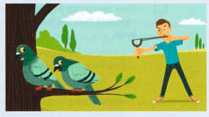

Using your dictionary
What do you look up?
As it can be difficult to work out what an idiom means even when you know all the individual words in the idiom, you will often need to look up idioms in a dictionary. If you are working with an online dictionary, then you will have no problems finding the idiom in question, but working with a traditional dictionary, you have to find where the idiom is listed. As an idiom consists of several words, which of these do you look up in your dictionary? For example, do you try to find kill two birds with one stone under kill, two, birds or stone, or let the cat out of the bag under let, cat or bag?
If you are using either the Cambridge International Dictionary of Idioms (CIDI) or the Cambridge Advanced Learner's Dictionary (CALD), then the easiest way of finding what you need is to look in the alphabetical index at the back of the book. This lists all the expressions included in the dictionary with the word where an entry for the expression will be found in the dictionary highlighted in bold. This shows that in CIDI kill two birds with one stone will be found under two and let the cat out of the bag will be found under cat. In CALD these two idioms will be found under kill and cat.
If you are using a different dictionary, read its introductory notes now to see how it deals with idioms. This will avoid the frustration you would otherwise feel on deciding to look up the wrong element of the idiom first.

What information does your dictionary give you?
Your dictionary will tell you a lot of other things as well as the meaning of the idiom. As idioms are used in such fixed ways, it is important to read the notes in your dictionary carefully if you want to use idioms as well as to understand them.
You will find all these things in a good dictionary of idioms:
- information about words that are interchangeable, e.g. drive/send sb round the bend
- information about how the idiom is used – brackets, for example, show if any words in the idiom can be left out, e.g. I (can) feel it in my bones.
- notes about the grammar of the idiom – there may be notes, for example, to say that an idiom is usually used in a passive construction or in a continuous form or in a negative sentence
- examples of the idiom in use
- comments on register – the register labels used in CIDI are informal, formal, very informal, old-fashioned, taboo, humorous and literary
- notes about regional variations in use – this is important as many British idioms will sound very strange to an American and vice versa
It is not possible for this book to include as much information about each idiom as you will find in a dictionary. So, look up the idioms that you particularly want to learn from this book in a dictionary as well. In your vocabulary notebook, write any further information or other examples of the idioms in the context that you find in the dictionary.